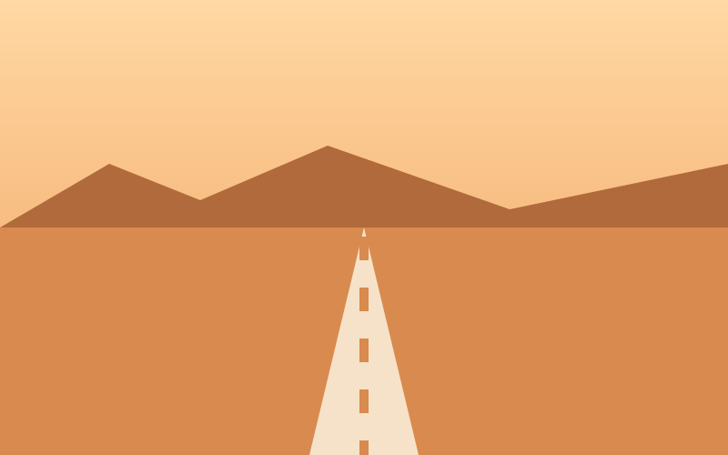
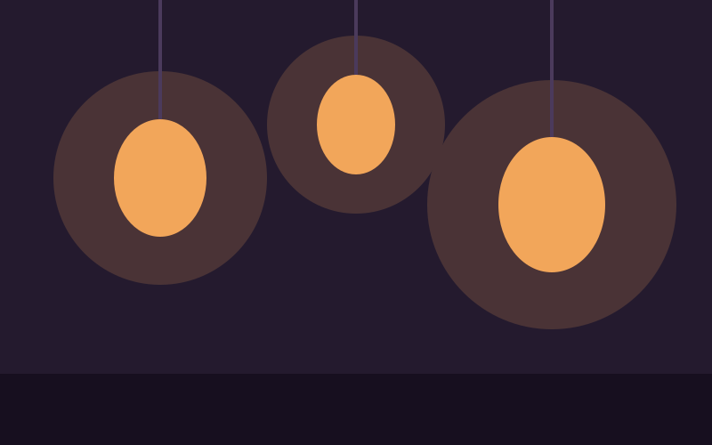
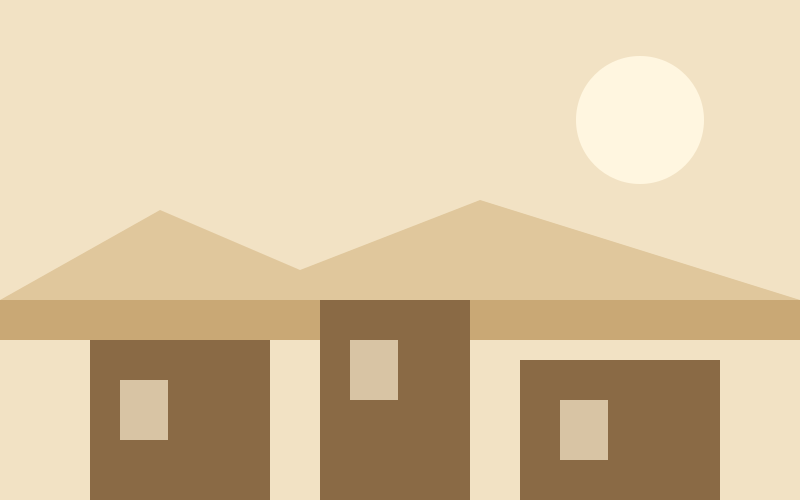

Six cards, turning independently
Each card keeps the height its front gave it, so turning one never moves the ones beside it. A card that grew to fit its back would shove the whole row down and take the card you were reading with it.
Plate one
Blue Ridge
Blue Ridge
Four ranges, each paler than the last.
- Plate
- 1 of 6
- Ink
- Four blues

Plate two
City Rain
City Rain
Five towers, five lit windows, and the rain drawn as five strokes.
- Plate
- 2 of 6
- Ink
- Slate and amber

Plate three
Desert Road
Desert Road
One road, drawn as a dashed line, which is all a road needs to be.
- Plate
- 3 of 6
- Ink
- Sand and rust

Plate four
North Fjord
North Fjord
Steep sides, and the water beneath them holding three straight lines.
- Plate
- 4 of 6
- Ink
- Cold greys

Plate five
Paper Lantern
Paper Lantern
Three lanterns, and the light around them drawn as three soft circles.
- Plate
- 5 of 6
- Ink
- Plum and amber

Plate six
Terrace Noon
Terrace Noon
Three blocks, three windows, and a sun with nowhere to cast a shadow.
- Plate
- 6 of 6
- Ink
- Clay and cream